お天気の日はベランダくりんくるん [梅吉]
週末三連休、４日は午後から突然黒い雲がかかって大粒のにわか雨が降った我が家地方でしたが
そのほかの日はお日様が気持ちの良いお天気でした。
週末は厳重な監視のもとベランダに出してもらえる梅吉さん。
久々にお外でお日様を楽しみましたよー。
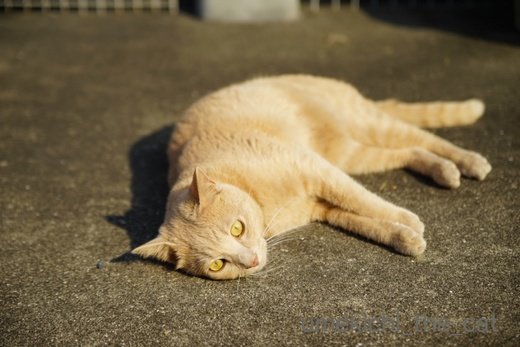
まずは、光合成から。
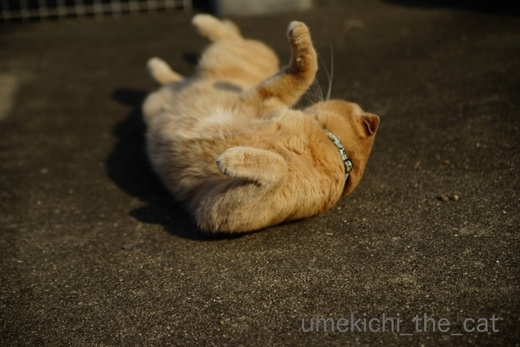
たっぷりお日様を吸い込んでメーターが（何の？）フルにチャージされると、くるん！
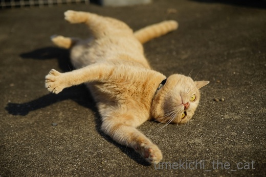
くりん！！
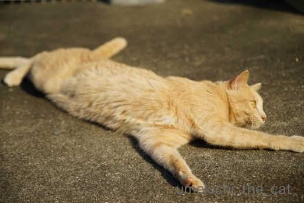
気持ちいいねー。
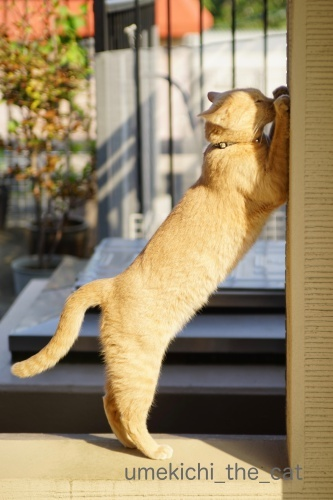
外壁での爪とぎ。足からおちりの角度がキマっています(*>艸<)
外壁での爪とぎがすっかり恒例になっています。
凹凸があるので手応え（爪応え？）十分なのでしょうけれど肉球を傷つけると大変なので
適当なところで引きはがしています (^▽^;)
 ↑ガブッと一押し↑
↑ガブッと一押し↑
１−１
梅吉のお薬入れをゲット！
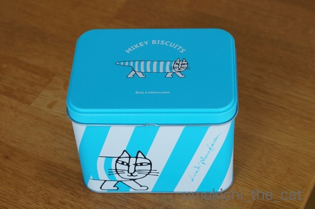
中にはビスケットが入っていました。
缶の内側には・・・・・・
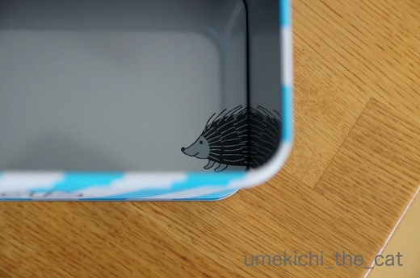
こんにちはー![[かわいい]](https://blog.ss-blog.jp/_images_e/148.gif)
１−２
最近、梅吉の自宅がタワマンになりました。
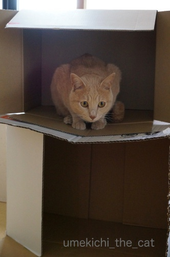
二階部分の床が歪んで見えますけど。
構造に問題のある不良物件なんじゃないですか？
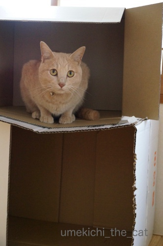
![[猫]](https://blog.ss-blog.jp/_images_e/101.gif) きのせいや きりっ
きのせいや きりっ![[ぴかぴか（新しい）]](https://blog.ss-blog.jp/_images_e/150.gif)
二階部分に乗る時はおっかなびっくりしています(*>艸<)
そのほかの日はお日様が気持ちの良いお天気でした。
週末は厳重な監視のもとベランダに出してもらえる梅吉さん。
久々にお外でお日様を楽しみましたよー。
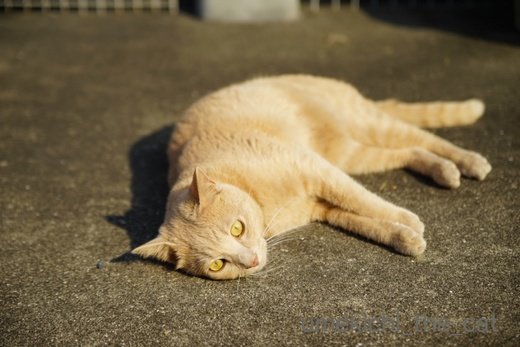
まずは、光合成から。
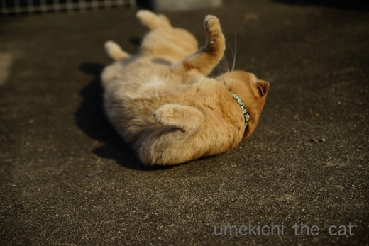
たっぷりお日様を吸い込んでメーターが（何の？）フルにチャージされると、くるん！
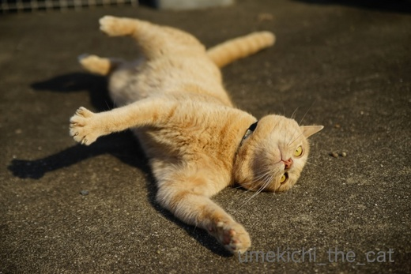
くりん！！
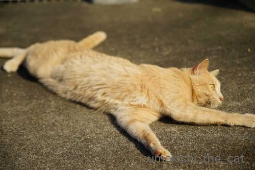
気持ちいいねー。
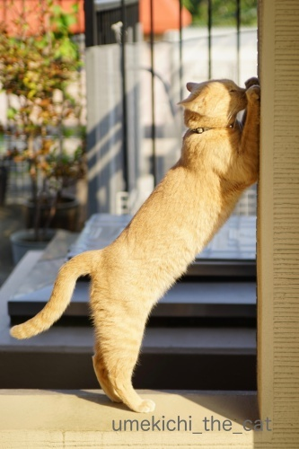
外壁での爪とぎ。足からおちりの角度がキマっています(*>艸<)
外壁での爪とぎがすっかり恒例になっています。
凹凸があるので手応え（爪応え？）十分なのでしょうけれど肉球を傷つけると大変なので
適当なところで引きはがしています (^▽^;)
１−１
梅吉のお薬入れをゲット！
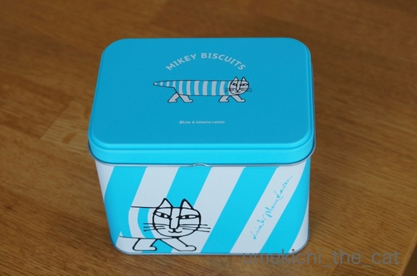
中にはビスケットが入っていました。
缶の内側には・・・・・・
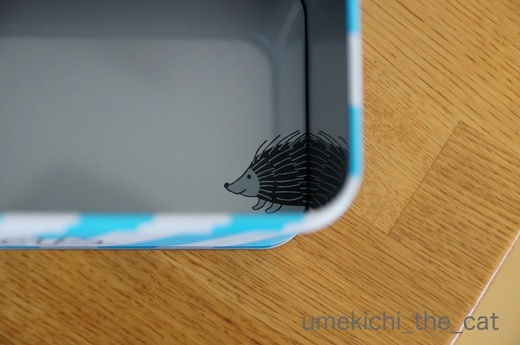
こんにちはー
１−２
最近、梅吉の自宅がタワマンになりました。
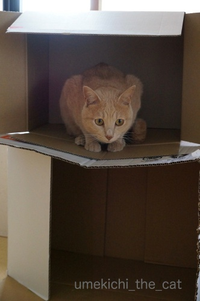
二階部分の床が歪んで見えますけど。
構造に問題のある不良物件なんじゃないですか？
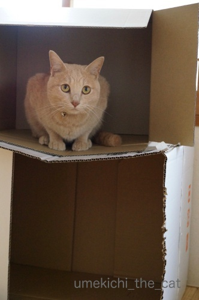
二階部分に乗る時はおっかなびっくりしています(*>艸<)

カフェオレ色の梅吉

梅吉 2023年8月10日 永眠


梅吉と出会った譲渡会

犬猫の理由なき殺処分ゼロ
妄想広告
UMEKICHI 光

爆発的に早い！
時々攻撃的！
Thanks to Mr.Boss365
爆発的に早い！
時々攻撃的！
Thanks to Mr.Boss365

梅吉さん、光合成ばっちりですねぇ(^O^)
うちは先代猫はベランダで遊ばせていましたが、
４にゃんになってからは目が行き届かないし、
順番に出そうとすると残った子が騒ぐしでベランダ禁止！
光合成は出窓でやってもらってます(^-^)
外壁での爪研ぎポーズ、背筋もまっすぐ伸びて美しいですねぇ(^_^)v
タワマン、やっぱり多少いびつな方がにゃんこには人気なんでしょうかｗ
by ニッキー (2017-11-06 16:35)
自然の光の温かさを感じてますねぇ～(*^_^*)
梅吉さん！くるん♪くりん♪と幸せそうです♪
タワマン（笑
構造に問題が！！
一階部分はガリガリの後が見えますね！
by きぃ (2017-11-06 16:46)
ここ数日天気良かったですね。梅吉君効率よく光合成してます。爪とぎ姿も美しい(*^_^*)いつの間にか不動産が増えてますね（笑）
by palpal (2017-11-06 17:07)
ベランダくりんくるん伸～びのび！
かわいいですにゃ～気持ちよさそうで、こちらも楽しくなります＾＾
爪とぎ姿も決まってます！
缶の内側、かわいい～♪
タワマン、多少の凹み加減がまたいいとか＾＾
by sana (2017-11-06 18:14)
ニッキーさん＞確かに、４にゃん同時監視は難しいですね。
何かあって「みんな撤収！」となっても
大御所様クラスのお身体のみなにゃんだど運ぶのも大変そうです^^;
ダンボールは強度よりもいびつになるくらいカスタマイズしているのが
猫様的にはよろしい様でw
きぃさん＞やっぱりお日様に勝るものは無いようです＾＾
ただ、お日様を浴びてハイになるのか突然走り出したりするので
要注意なんですよ^^;
梅吉タワマンの１F、梅吉親方がデザインを加えましたw
palpalさん＞久しぶりに晴れましたよね♪
３日は京都にいたのですが日差しが暑かった！
天候のせいか観光客もいつもより更に多かった！！
sanaさん＞くりんくるんは結構な勢いがあるので真剣にみていると
目が回りそうになります(◎_◎)
タワマンはカスタマイズ感が良いみたいですよ〜。
by ちぃ (2017-11-06 18:33)
リサ・ラーソンの缶が可愛いけどお薬入れと聞いて、あぁやっぱり梅吉さん病気なんだと、ちょっとしんみりしてしまいました。毎週見ていると会ったこともないのに、近所の顔馴染みな気分になっちゃってます。タワマンはうちだったら入居権を巡る戦いが繰り広げられるので、入居できた時にはポロボロです。
by zombiekong (2017-11-06 19:49)
お日様が気持ち良いですね～クルリンしたくなりますね～
by みぃにゃん (2017-11-06 20:23)
お日様たっぷりチャージしても熱中症の心配しなくていい良い季節になりましたね(*^▽^*)
外壁での爪とぎ、腰がしっかりはいってぶつかり稽古のように見えなくもなし(^▽^;)
タワマンにどこまで梅吉さんのカスタマイズが入るか楽しみです♪
by ゆきち (2017-11-06 20:31)
梅吉さん、太陽を一杯に浴びて気持ち良さそうですね！
爪研ぎもできてストレス発散出来ているみたいですね(^^)
by ma2ma2 (2017-11-06 21:20)
連休は行楽日和でしたね。
梅吉さんものんびり日向ぼっこで気持ちよさそうですね。^^)
タワマン、間にもう一枚ダンボールを敷いたほうがよさそうですね。^^;
by yes_hama (2017-11-06 21:30)
外壁での爪とぎというより、熱心にお祈りスタイルのようです。
つま先立っちが、なんとも可愛らしい。
角度、本当に決まっています。
梅吉さんのタワマン『おっかなびっくり』からの『きりっ』こちらも決まってます。
by kiki (2017-11-06 21:48)
おちりの角度が良いですね。
タワマンは、ハラハラ感が良いですね(^-^;
梅吉さん、崩壊するのを待っている風に見えます(^^)
by riverwalk (2017-11-06 22:07)
このマンション、出入りするたびに
形が変わっていきそうー(^_^;)
もちろん手作りですよね。
何が入ってた箱なんだろう？？？
日本ハム、大谷君はいなくなるけど、
ちゃんと清宮君という人気者が来るし
クジ運強い球団が羨ましいですわ。
by よーちゃん (2017-11-06 22:13)
ベランダの日向ぼっこ、とっても気持ち良さそう＾＾
温もりをしっかりチャージした後の爪とぎも
お約束なんですね♪
堂に入ってます( ´∀｀ )
リサラーソンのお菓子の空き缶、梅吉くんの薬入れにしたら、
嫌なお薬も美味しく感じる気がします(≧▽≦)
…美味しくは、ないか…。＾＾；
by マーヤ (2017-11-07 01:04)
長男君と次男君はお外に出たとたんに
コンクリートの上でゴロンゴロンしてましたね。
お外に出た時の大きな楽しみだったみたいです＾＾
この床は直ぐに抜けちゃいそうなので
リフォームした方が良いのでは？＾＾；
by ぽちの輔 (2017-11-07 06:45)
光合成ばっちりで気持ちよさそうー^^
ころんころん、これを見てると
幸せな気分になるよね♪♪
諭吉君、別宅とっても快適そうだよーーー・・・快適なのかあ？？？(笑)
by リュカ (2017-11-07 08:22)
ベランダでごろんごろんの梅吉くん、本当に気持ちよさそうでうれしそうで、
見ているこっちもしあわせな気分になりますね♪。
光合成・・・・耳の間から双葉が出たりするのを想像してしまったｗ。
お薬入れのカンカン、いいなぁ！
だってふたを開ければ、こっそりハリネズミｗ。
by ハリネズミ (2017-11-07 08:29)
ベランダで光合成。気持ちよさそう(^-^)
なんなんだろう。気持ちが良いとコロンコロンって
くねくねするのはｗ
やっぱりメーターの(何の？)チャージ？
ナデナデが気持ちよくても、名前を呼ばれる声が心地よくても
コロンコロン。
コロンコロンは幸せってことなのか(^ω^)
by emi (2017-11-07 13:02)
気持ちよさそ～♪ やっぱりお外の空気は格別なのかなー。くるんくるんも素早そう！
新居、興味シンシンですにゃ。うちのお兄も段ボール大好き派で、部屋の中で家庭内ホームレス状態です・・・(￣Д￣；；
by Ginger (2017-11-07 13:36)
ビタミン補給のためにも光合成は大事らしいですよー＾＾
by じゅらまろ (2017-11-07 16:01)
zombiekongさん＞いやもう（残念ながらご近所じゃないけど）顔なじみさんですから！
親戚のおばちゃんぐらいの気持ちでいていただけると更に嬉しゅうございますよ(^_－)☆
梅吉に投薬している私自身が「梅吉は持病持ち」ってピンときていません。
健康管理に必要なサプリメントを飲ませているくらいの気持ちです。
ちょっとのんきかもしれませんがこれでいいかな？と思っていますよ。
いつも梅吉のこと気にかけてもらってありがとうございますー( ；∀；)
みぃにゃんさん＞久しぶりのベランダで浴びるお日様、満喫したようですよ＾＾
ゆきちさん＞真夏のベランダは灼熱地獄なのですが・・・
気持ちの良い季節は「梅、ベランダ行く？」なんて聞こうものなら
お目目をキラッキラさせて走ってきたのですが
真夏は「わしはいけへんで」とつれない態度でした^^;
にゃんこも熱中症の危険は察知するようですよw
タワマン、日々歪んできています・・・・・
ma2ma2さん＞人間も動物もやっぱりお日様が気持ち良いですよね〜＾＾
爪とぎは、肉球を怪我しない程度にストレス発散してもらいます！
yes_hamaさん＞アズ氏も日差しを浴びて日光浴を楽しまれたのでしょうか。
お日様で冬毛もぐんぐん成長中！？(*>艸<)
タワマンはしばらく梅吉親方（大工になるんですよ！）の普請に任せておきますw
kikiさん＞おお！「喜びの壁」にむかってお祈り、というところでしょうか＾＾
なんだか視線を感じるな〜と思ったら梅吉がタワマンからじっと私をみていました。
「どやー、にかいにあがったでー」と自慢したかったのでしょうwww
riverwalkさん＞梅吉のタワマン、崩壊するように自ら手をかけてもいるのですよ^^;
時々すごい勢いでダンボールをガジガジと・・・
創作意欲（破壊意欲？）は止められないようです(*>艸<)
よーちゃん＞どちらも宅配便で届いた日用品が入っていました＾＾
廃品利用だなんて不動産王梅吉にはとても言えません(*>艸<)
ダンボールは日々ガブガブとかじって行くので毎日形が変化してきます。
我が家のサグラダ・ファミリア！？
日ハムのクジ運の強さにはびっくりですよねー。
栗山さんは引いてはいけないwww
中田も宮西（セットアッパー・サウスポー）増井（クローザー）も
FAでいなくなっちゃいそうだから
清宮くんには試合でも集客でも頑張ってもらわなきゃ！
マーヤさん＞あ、爪とぎは家から出たら一番先にする儀式なんですよ＾＾
「よーし！これからころげまわるでー」と気合いでも入れているんでしょうか。
梅吉、お薬の味はあまり気にしていないみたいです。
カリカリとよく混ぜ合わせなきゃ、と頑張って混ぜていたのに
先日は残っていたお薬だけ食べてましたwww
口に入ればなんでもOKみたいな？(*>艸<)
あんまり神経質な子じゃなくてよかったよ・・・・
ぽちの輔さん＞そうそう！走り出て、待ってましたー！と
くるんくりんすることあります＾＾
家の中でするのと外でするのとは違うのでしょうねw
梅吉タワマンは本にゃんがぐらぐらするのも気に入っているようなので
しばらくはこのままで。
壊れたらさよならー、します！スクラップ＆ビルドの気持ちで(^_－)☆
リュカさん＞頭からど〜んって行くのでアホになるんじゃないかと
心配になるくらい勢いがあるのーw
週末は別宅からご挨拶するような気がします。
あ、なんか金運が良さそう！宝くじかったよ(*>艸<)
ハリネズミさん＞ベランダ、気持ちの良い時期は大好きなんですよね。
真夏の灼熱時には出たがりませんwww
カンカンいいでしょー＾＾
記事アップしながら「ハリネズミさん見てるー？」って思っていましたヾ(*ΦωΦ)ﾉ
emiさん＞梅吉のコロンコロンは頭からズサーッといくから
ちょっと痛そうなんだけど^^;
そう言えば梅吉のご飯を用意している時も足元でコロンコロンしています。
高まる気持ちを抑えきれなくてコローンなのかもね〜www
Gingerさん＞お家の中にダンボール暮らしの方が？(*>艸<)
ブルーシートも喜ばれたりして！
じゅらまろさん＞ビタミンDは大切よねー＾＾
わたしも日光浴びなくちゃ！
by ちぃ (2017-11-07 21:29)
わー、気持ち良さそう（*´∀｀*）
お日様充電できましたね。
日差しが暑すぎず弱すぎず、一番いい頃ですよね。
タワマン、２階の床設計が・・・！（笑）
しかしこの「タワマン」、徐々に縦に伸びていくのでしょーか・・・
by Ja-Kou66 (2017-11-08 00:14)
お外で気持ちよさそうですね～～～ｖｖｖホノボノしますｖｖｖ
by Raccoon (2017-11-08 14:48)
梅吉くんのしぐさが、かわいいですね～
我が家ではワンコを新たに飼い始めましたが、猫もいいな～って思っちゃいました。
by saramina (2017-11-08 21:13)
Ja-Kou66さん＞真夏の灼熱地獄の時は「ベランダに行く？」って聞いても
知らんぷりして寝たふりしてたのに・・・
気持ちの良い季節になって自分から「そとにいくでー」と
誘いに来るようになりました(^▽^;)
タワマン、縦は危険そうなので横に伸びようかと・・・
タワマンではなくなりますねwww
Raccoonさん＞思わず一緒にくりんくるん・・・はしません( ^ω^ ）
saraminaさん＞ワンコとにゃんこの生活も良いかもしれませんよ〜＾＾
でも今はかれんちゃんで手がいっぱいでしょうか(*^_^*)
by ちぃ (2017-11-09 15:06)
光合成中のしぐさがたまりません。
可愛すぎて邪魔したくなります。
by 響 (2017-11-10 13:59)
梅吉さんのお宅は、ステキですね〜♡
お陽さまたっぷりベランダ＋思いっきりのび〜の爪とぎ外壁＋タワマン♪
タワマンのたわみは･･･ じつはスリルも楽しめる、アミューズメントパーク仕様?!(^_^;
by のらん (2017-11-11 10:48)
響さん＞邪魔したくなる気持ち、わかりますー！
響さんはにゃんこのあくびのお口に指入れちゃう方ですね＾＾
私もしちゃいます (≧з≦)
のらんさん＞たわみあってこそのタワマンだそうですよ(^_－)☆
梅吉は不動産王なのでいろんな物件を持ってます！
ニッチな市場もウケるんだとか( *´艸｀)
by ちぃ (2017-11-11 20:05)